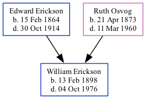

William Carad Erickson 1898 - 1976
[ Home ] | [ Surnames Index ] | [ Family History ]The child of Edward Erickson and Ruth Osvog, , William was the great-great-uncle of Stephanie Hardesty (née Teten), was born in Iowa on Feb 13, 18981,2,3,4.
During his life, he was living in Palestine, Story, Iowa in 19001; in Canton, Lincoln, South Dakota in 19102; and in Estherville, Emmet, Iowa on Jan 1, 19254.
He died on Oct 4, 1976 in San Diego3.
Parents
- Edward L was born on Feb 15, 1864
- Ruth C was born on Apr 21, 1873
Citations
- 1900 United States Federal Census Ancestry.com Operations Inc (Age: 20; Marital Status: Single; Relation to Head of House: Son)
- 1910 United States Federal Census Ancestry.com Operations Inc (Age in 1910: 12; Marital Status: Single; Relation to Head of House: Son)
- California, Death Index, 1940-1997 Ancestry.com Operations Inc
- Iowa, State Census Collection, 1836-1925 Ancestry.com Operations Inc (Marital Status: Single; Relation to Head: Son)
Family Tree
Data (GEDCOM) maintained by Jay Weston Hannah, Omaha, Nebraska, USA.
Website generated by ged2site. Last updated on Jun 18, 2024.